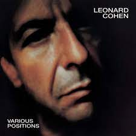

Hallelujah
Song by Leonard Cohen

original video
Now I've heard there was a secret chord
That David played, and it pleased the Lord
But you don't really care for music, do you?
It goes like this, the fourth, the fifth
The minor falls, the major lifts
The baffled king composing Hallelujah
Hallelujah, Hallelujah
Hallelujah, Hallelujah
Your faith was strong but you needed proof
You saw her bathing on the roof
Her beauty and the moonlight overthrew you
She tied you to a kitchen chair
She broke your throne, and she cut your hair
And from your lips she drew the Hallelujah
Hallelujah, Hallelujah
Hallelujah, Hallelujah
You say I took the name in vain
I don't even know the name
But if I did, well, really, what's it to you?
There's a blaze of light in every word
It doesn't matter which you heard
The holy or the broken Hallelujah
Hallelujah, Hallelujah
Hallelujah, Hallelujah
I did my best, it wasn't much
I couldn't feel, so I tried to touch
I've told the truth, I didn't come to fool you
And even though it all went wrong
I'll stand before the Lord of Song
With nothing on my tongue but Hallelujah
Hallelujah, Hallelujah
Hallelujah, Hallelujah
Hallelujah, Hallelujah
Hallelujah, Hallelujah
Hallelujah, Hallelujah
Hallelujah, Hallelujah
Hallelujah, Hallelujah
Hallelujah, Hallelujah